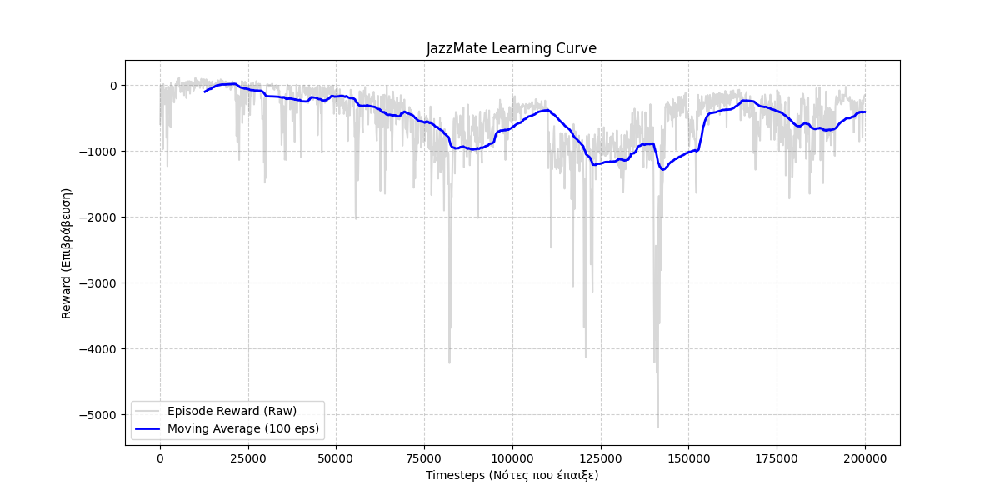

Επισκόπηση
Το JazzMate είναι ένας αυτόνομος μουσικός πράκτορας που μαθαίνει να δημιουργεί τζαζ σόλο σε πραγματικό χρόνο μέσω Deep Q-Learning. Το σύστημα ανταποκρίνεται δυναμικά σε αρμονικές εξελίξεις και αλληλεπιδρά με μουσικούς μέσω MIDI controllers.
Δυνατότητες
Τεχνική Προσέγγιση
Ο πράκτορας εκπαιδεύεται με Deep Q-Networks από το Stable-Baselines3, χρησιμοποιώντας ένα προσαρμοσμένο περιβάλλον Gymnasium που ενσωματώνει μουσική θεωρία στη συνάρτηση ανταμοιβής. Μοντελοποιείται ως Markov Decision Process όπου η κατάσταση περιλαμβάνει την τρέχουσα συγχορδία και προηγούμενες νότες, οι ενέργειες αφορούν την επιλογή νότας, και η ανταμοιβή βασίζεται σε αρμονική συμβατότητα και μελωδική ροή.
Παραδοτέα & Demo
📄 Αναφορά
ViewΑναλυτική τεχνική τεκμηρίωση με τη διατύπωση MDP, τη συνάρτηση ανταμοιβής, τη μεθοδολογία εκπαίδευσης και την ανάλυση αποτελεσμάτων.
📊 Παρουσίαση
ViewΣύντομη παρουσίαση με τα κύρια σημεία του έργου και την αξιολόγηση της απόδοσης του πράκτορα.
💻 Κώδικας
DownloadΟλοκληρωμένος πηγαίος κώδικας του περιβάλλοντος RL, του συστήματος εκπαίδευσης και του διαδραστικού playback με όλες τις εξαρτήσεις.
Αποτελέσματα Εκπαίδευσης
Η εξέλιξη της απόδοσης του πράκτορα κατά τη διάρκεια της εκπαίδευσης 200,000 βημάτων:
